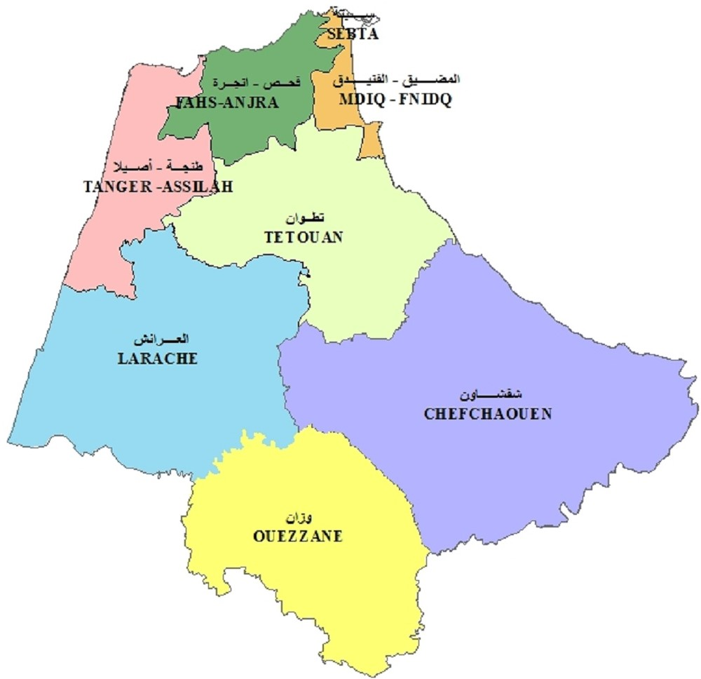

Tetouan possede un climat méditerranéen, un hiver humide et peux
rigoureux mais pluvieux et un été chaud à l’intérieur des terres
et tempéré vers les côtes ou la température n’excède généralement
pas 33°C. Il pleut beaucoup entre octobre et avril.
Meteo à Tetouan
Musique de Tetouan
la musique andalouse (Al Aala), principal genre de musique de
la ville qui anime toutes les occasions festives.Les principaux
instruments sont le violon, le luth et les percussions (Tar et Derbouka).
Le piano et les cuivres (saxophone et clarinette) ont été introduits par Temsamani.
Territoire de Tetouan

Elle se trouve à la pointe nord-ouest du Maroc, dans la chaîne montagneuse du Rif.
Sa superficie est de 11 570 km2 pour une population de 2 470 372 habitants.
La région est baignée par la mer Méditerranée au nord et l’océan Atlantique à l’ouest.
Elle dispose d’une frontière avec l’Espagne, et plus particulièrement avec la ville de Ceuta.